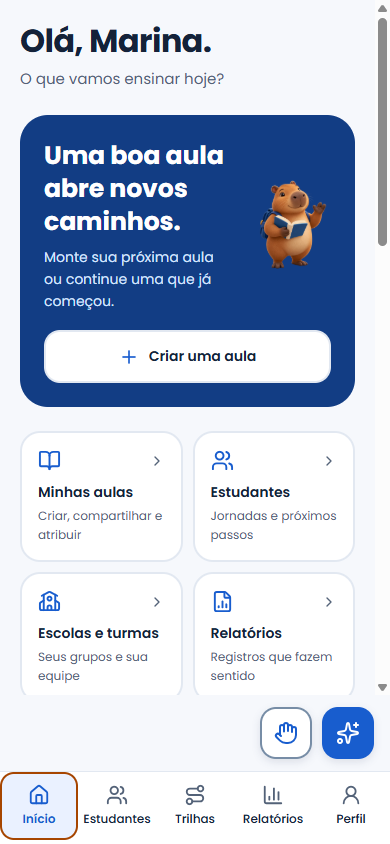
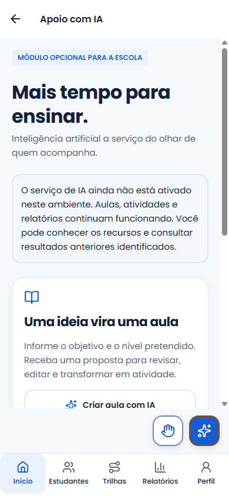
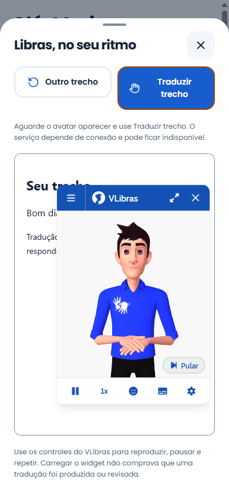
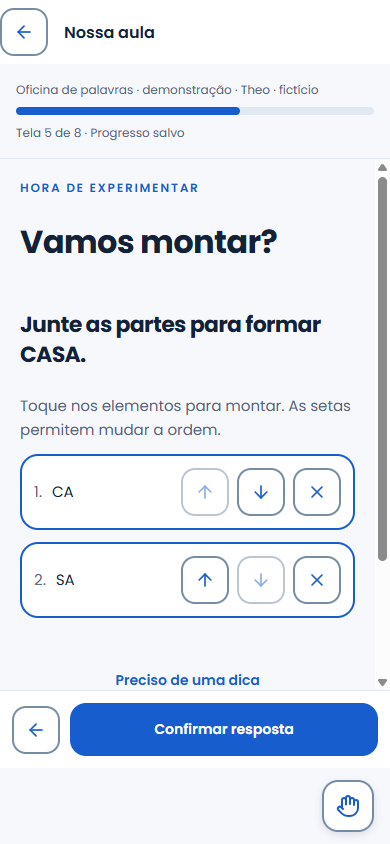
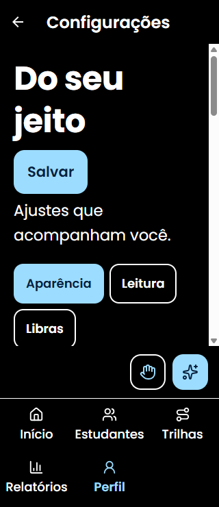
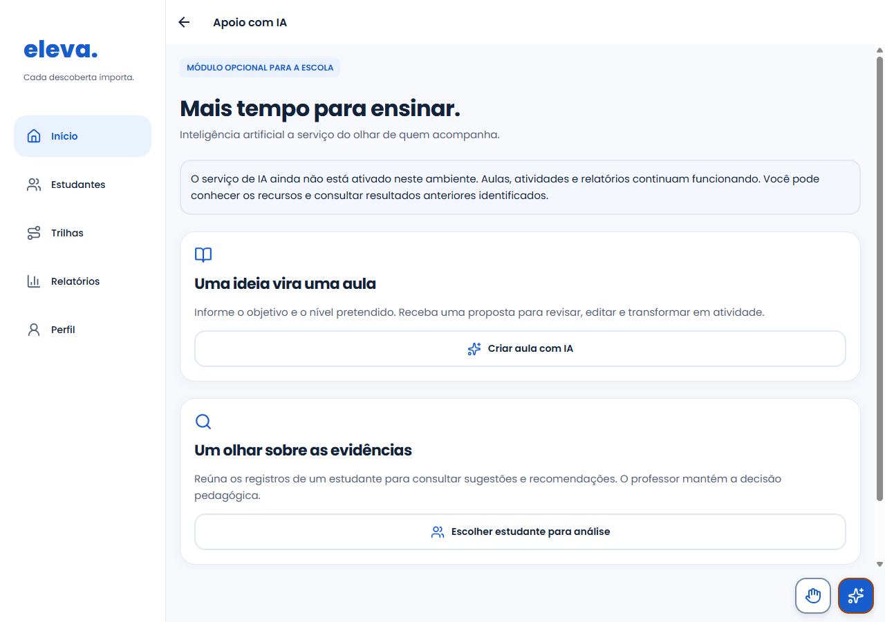

Atalhos no início
Os dois ícones ficam acima da navegação.

Acesso direto à IA
Abre o hub existente e informa quando o serviço não está ativado.

Libras pela interface
Trecho público “Bom dia”: resposta real BOM DIA e reprodução do avatar. Qualidade linguística não avaliada.

Durante a aula
Somente Libras; a confirmação da atividade permanece livre.

Contraste e ampliação
320px, fonte150%, sem transbordamento horizontal.

No computador
Mesmos recursos, com navegação lateral.
